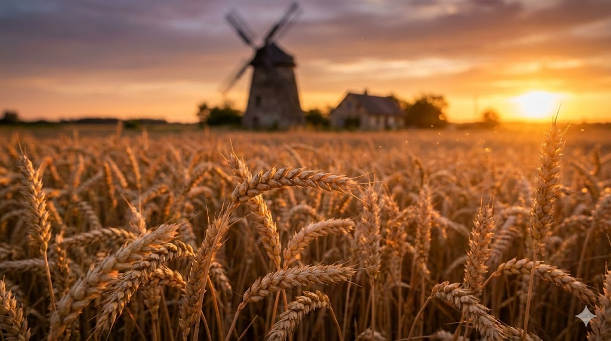

Die Reise des Korns
Mehl ist das Fundament unserer Brotkultur. Es ist das Ergebnis einer jahrtausendealten Beziehung zwischen Mensch und Natur, verfeinert durch Technologie und Handwerk.
1. Von der Ähre zum Pulver
Vor über 10.000 Jahren begannen Menschen im "Fruchtbaren Halbmond", Wildgräser gezielt auszusäen. Doch wie kommt das Korn ins Brot?
Steinmühle vs. Walzenstuhl: Ein technischer Vergleich
Steinmühle (Traditionell): Das Korn wird zwischen zwei Steinen zerrieben. Dabei wird das Korn "gequetscht". Keimling und Schale werden oft mit dem Mehlkörper vermahlen.
Vorteil: Mehr Nährstoffe und Geschmack (Keimöl). Nachteil: Kürzere Haltbarkeit (Fett wird ranzig).
Walzenstuhl (Industrie): Geriffelte Stahlwalzen "scheren" das Korn auf. [attachment_0](attachment) Es ist ein Prozess des schrittweisen Aufbrechens und Siebens.
Vorteil: Präzise Trennung von Mehlkörper, Kleie und Keimling. Haltbares, helles Mehl mit exakten Backeigenschaften.
Exkurs: Grieß, Flocken & Brei
Bevor das Korn zu feinem Mehl wird, durchläuft es gröbere Stadien. Grieß sind grobe Stücke des Mehlkörpers. Hartweizen liefert den besten Grieß für Pasta.
Warum Grießbrei dick wird
Wenn man Grieß in heiße Milch rührt, saugen sich die Stärkekörnchen voll wie kleine Schwämme, platzen auf und verkleistern die Flüssigkeit zu einem festen Pudding. Das ist die reinste Form der "Stärkebindung".
2. Das Weizen-Modell & Die Typen
Die "Type" (z.B. 405, 550) misst den Mineralstoffgehalt (Asche). Je höher die Zahl, desto mehr Schale ist im Mehl.
Die Wissenschaft des Glutens
Gluten ist kein einzelnes Protein, sondern ein Komplex aus zwei Partnern:
- Gliadin: Sorgt für die Viskosität (Dehnbarkeit). Lässt den Teig fließen.
- Glutenin: Sorgt für die Elastizität (Stabilität). Lässt den Teig zurückspringen.
Wenn Wasser dazukommt und wir kneten, verhaken sich diese Proteine zu einem 3D-Netzwerk. Dieses Netz fängt die Gärgase (CO2) der Hefe ein wie ein Ballon. Ohne dieses Netz wäre Brot ein flacher Fladen.
3. Jenseits des Weizens
In Amerika regiert der Mais. Doch roher Mais taugt nicht zum Backen. Die Lösung ist Chemie.
Deep Dive: Nixtamalisation
Warum kocht man Mais in Kalkwasser (Calciumhydroxid)? Der hohe pH-Wert (alkalisch) bewirkt chemische Wunder:
- Nährstoff-Freisetzung: Niacin (Vitamin B3) ist im rohen Mais gebunden. Der Kalk spaltet diese Bindung auf und macht das Vitamin für den Menschen verfügbar. (Verhinderte die Krankheit Pellagra).
- Teigfähigkeit: Die alkalische Lösung löst die Hemicellulose in der Zellwand. Die Stärke verkleistert teilweise. Nur so verbinden sich die gemahlenen Körner zu einem formbaren Teig (Masa). Rohes Maismehl würde zerbröseln.
4. Die Brot-Klassiker
Exkurs: Warum wird Brot altbacken? (Retrogradation)
Brot wird nicht einfach nur "trocken" durch Wasserverlust. Der Hauptgrund ist die Retrogradation der Stärke.
Nach dem Backen ist die Stärke verkleistert (chaotisch, wasserhaltig). Mit der Zeit wollen die Stärkemoleküle aber zurück in ihre ursprüngliche, kristalline Ordnung. Sie geben das Wasser ab und werden hart.
Der Trick: Hitze (Aufbacken) kehrt den Prozess kurzzeitig um – die Kristalle schmelzen wieder.
5. Die Welt der Stärke (Alternative Mehle)
Von Mais über Reis bis zur Kichererbse. Diese Mehle bringen neue Geschmäcker und Texturen.